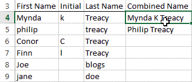

Programming By Example, By Example
Danny O'Connor | August, 2020
Programming-by-example, commonly referred to as PBE, is featured in several popular pieces of software. As the name suggests, programming-by-example allows users to generate programs by providing nothing more than a few example inputs and outputs. PBE can be used to automate repetitive tasks, such as populating a new column in Microsoft Excel based off an existing column. Learning how to use your PBE tool effectively can increase your productivity, and save time on repitious tasks, so its a worthwhile endeavor to understand how they work. Instead of writing code in a programming language, you program your desired program via examples! PBE works by generating programs that satisfy the provided examples at least, and hopefully solve all desired use cases. In order to use PBE effectively, you must be able to come up with a full set of descriptive, unambiguous examples which exemplify the task you want to fulfill. Often times, end-users of PBE systems aren't fully aware of what the software is looking for in terms of the given examples - no matter what PBE system you may be using, this site will give you the necessary tools to become an effective PBE user!
Excel Flash Fill
Coming Up with Effective Examples
PBE can only be as effective as the provided examples allow it to be. Examples are extremely friendly towards the user, since most are able to come up with examples for their tasks. More people are able to come up with examples for their problem than are able to program a solution by hand, which is great for the everyday user! However, examples are inherently ambiguous, and often do not encompass the entire problem. Since generating effective examples is so important to PBE, and coming up with well-suited PBE examples isn't a widely held skill, it's important to put some thought into your examples. Here's a short guide you can refer to when coming up with examples of your own.
1. Decompose the problem
Some problems are still too big to be solved by modern PBE systems in one go. Often, it is necessary to decompose these problems into smaller sub-tasks that PBE can be used to solve.
Depending on which PBE system your using, you should be able to combine these PBE-backed sub-tasks to solve your original problem. If your using Excel Flash Fill , for example, you can store each intermediate result in its own column which will be the input for the next step!
Besides being helpful for the PBE system, decomposing your problem can be helpful for your understanding of the problem, and therefore your ability to come up with worthwile examples. It can be difficult to come up with examples for sufficiently complex tasks, but coming up with examples for each individual step is usually much easier!
2. Disambiguate your examples
One of the biggest challenges of PBE is that examples are an ambiguous way of specifying a program. There are many possible programs all with different behaviors which could satisfy any given set of examples.
It's best to think of your examples as the full description of the program you wish to generate. In order to fully describe your program, you want to think of examples which encompass any and all specifications you want the program to fulfill.
If all your examples seem exceedingly similar to each other, that is often a sign that they are too ambiguous, and might miss some of the finer details of the task at hand.It is also useful to think of any edge-cases you might want to encounter, and include those as examples.
3. Provide enough examples
PBE works by generating a program that works on the provided examples, but they don't always generate programs that work as expected for all input. Sometimes, when providing too few examples, you end up with a program which does something you don't intend.
The number of examples you should provide depends on the complexity of the task, and the specific PBE system you may be using. Around 5 is a good baseline to aim for, but you may need to add more until you get a working program.
When thinking of additional examples, you want to keep in mind disambiguation, and provide examples that:
- Conform to the expected behavior
- Further define your intentions
- Exemplify behavior on edge-case inputs
4. Validate your examples
This may seem self-evident, but it is very important that your examples don't have any mistakes in them. Providing a wrong example can lead PBE down the wrong path, resulting in a program which satisfies the erroneous examples without achieving the task at hand.
If your PBE system isn't working as expected, double checking that your examples don't contain any mistakes is always a good first step.
5. Refactor and retry
Even if you provide a good set of initial examples, there's no garauntee the PBE system will get it right on the first go. Often times, getting the desired result from PBE requires some back and forth.
When the PBE system isn't doing what you intend, go through your examples one more time to see what may be missing. Refer back to the guide, and see if you can further decompose your problem, or disambiguate and validate your examples.
Practice Problems
What better way to learn Programming-By-Example, then by example! Test out what you've learned with some practice problems.